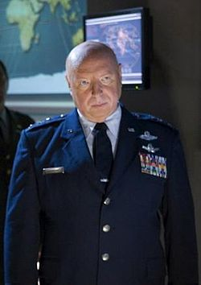

Jack O'Neill

Jonathan J. O'Neill, also known as John or, most commonly, Jack, was a Lt. General, in the United States Air Force, who served eight years in the Stargate Program until he was transferred to The Pentagon to become the head of Homeworld Command (also called Homeworld Security). He was the original leader of SG-1 and later became the commander of Stargate Command. Master Bra'tac has called him "O'Neill of Minnesota."
Samantha Carter

Samantha Carter is an astrophysicist, engineer and pilot who was the operational leader of the Atlantis expedition for one year, after playing a key role in bringing the Stargate Program into existence as a member of SG-1. Considered Earth's leading expert on the Stargate and a host of other alien technology, Jack O'Neill once emphatically proclaimed her brain to be a national resource.
Daniel Jackson

Daniel Jackson, Ph.D. has several times displayed he is an individual of great integrity, often passionately arguing against morally unsound plans. He tends to be very respectful of alien cultures, except when their culture involves immoral practices, and he often approaches the unknown with an almost childlike sense of awe. However, he seems to have a hard time accepting no-win scenarios.
Teal'c

Teal'c of Chulak, also known as Teal'c of the Tau'ri, and sometimes Shol'va is a Jaffa in the service of Stargate Command and devoted to the cause of the Jaffa Rebellion. Teal'c is a Jaffa from the planet Chulak, a planet orbiting a binary star system. He will be 164 years old in the year 2013, after aging 50 years trapped on the Odyssey. Teal'c was formerly in the service of the System Lord Apophis as his First Prime.
George Hammond
George S. Hammond was the Commander-in-Chief of Stargate Command for seven years, before becoming head of Homeworld Command.